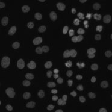

Broad Bioimage Benchmark Collection
Annotated biological image sets for testing and validation
Human HT29 colon-cancer cells
Accession number BBBC001 · Version 1
Example image
-

Biological application
These images are of human HT29 colon cancer cells, a cell line that has been widely used for the study of many normal and neoplastic processes. For instance, Moffat et al. (Cell, 2006) screened a set of about 43,000 such images for mitotic regulators. Their analysis followed the common pattern of identifying and counting cells with a phenotype of interest (in this case, cells that were in mitosis), then normalizing the count by dividing by the total number of cells. Such experiments depend on accurate cell counts.
Images
The image set consists of 6 fields of view from Moffat et al.'s RNAi screen. The cells in all six images have been treated with an RNA interference reagent (Rock1_1885_k27). The samples were stained with Hoechst 33342, pH3, and phalloidin. Hoechst 33342 is a DNA stain that labels the nucleus. Only the images of the Hoechst 33342 channel are included, as the other channels are not useful for counting cells.
The images were acquired at the Whitehead-MIT Bioimaging Center on a Cellomics ArrayScan. The image size is 512 × 512 pixels. The images are provided in the native DIB format and converted to 8-bit TIFF files.
BBBC001_v1_images_dib.zip (1.9 MB)
BBBC001_v1_images_tif.zip (832 kB)
Ground truth C
A tab-delimited text file contains cell counts in each of the 6 images, as determined by two different human counters. To compare an algorithm's results to these, first compute for each image the absolute difference between the algorithm's count and the average of the humans' counts, then divide by the latter to obtain the deviation from ground truth (in percent). The mean of these values over all 6 images is the final result.
The two human observers vary by 11% for this image set.
Published results using this image set
| C | Citation |
|---|---|
| 6.2% | Carpenter et al., Genome Biology, 2006. See Figure 2A, pages 6-7. |
Recommended citation
"We used image set BBBC001v1 [Carpenter et al., Genome Biology, 2006] from the Broad Bioimage Benchmark Collection [Ljosa et al., Nature Methods, 2012]."
Copyright
 The images and ground truth are licensed under a Creative Commons Attribution-NonCommercial-ShareAlike 3.0 Unported License by David Root and Anne Carpenter.
The images and ground truth are licensed under a Creative Commons Attribution-NonCommercial-ShareAlike 3.0 Unported License by David Root and Anne Carpenter.